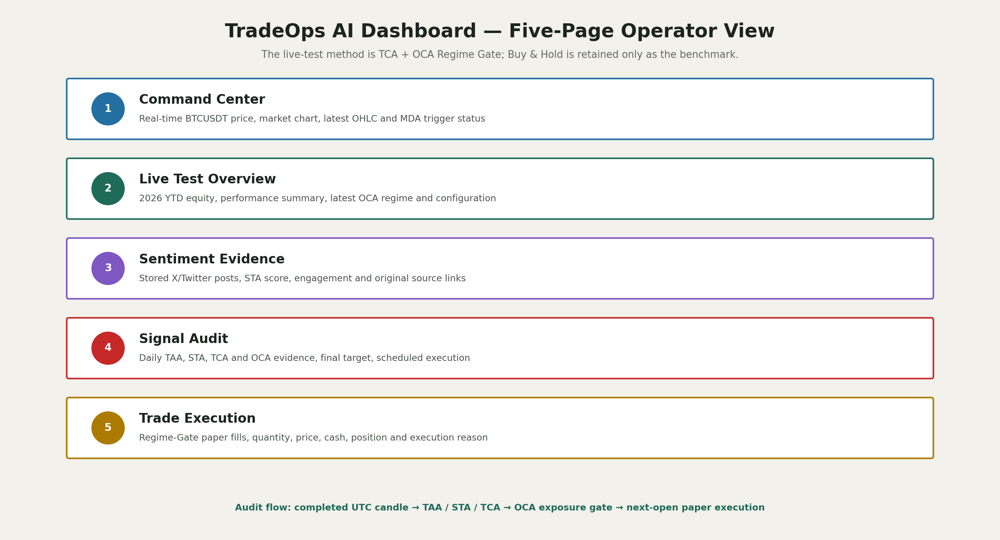
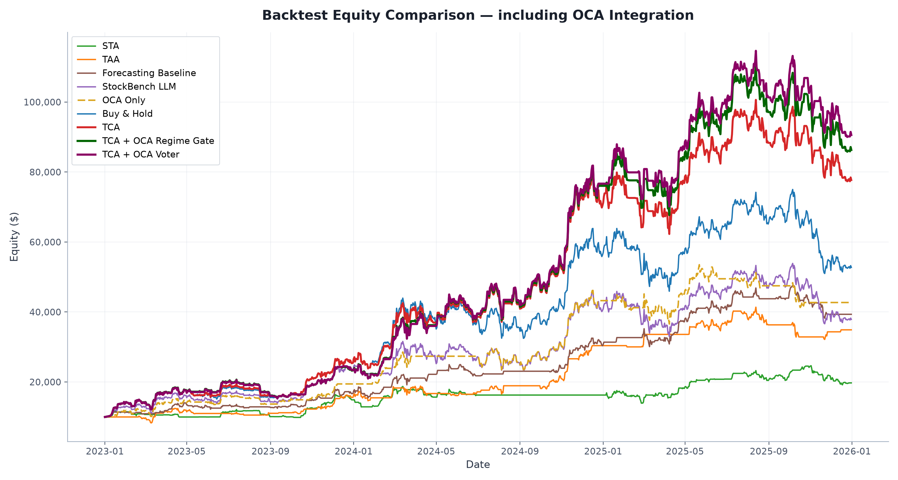

HKU MSc(CompSc) · Financial Computing · Capstone Project
Real-time Financial Sentiment Analysis & Trading Decision System
A modular multi-agent AI system that turns live market data, technical indicators, sentiment evidence, and an on-chain regime signal into explainable BTC decisions. The selected live-test method is TCA + OCA Regime Gate, with full audit trail, next-open paper execution, and an operator dashboard.
Overview
Cryptocurrency markets run 24/7 and produce dense, multi-source signals. Existing approaches tend toward either opaque end-to-end models or brittle fixed rules. This project delivers a production-style decision-support prototype that is fast, modular, and auditable: every recommendation can be traced back to the market snapshot, technical signal, and sentiment reading that produced it.
Aim
Design, implement, and evaluate a collaborative agent architecture for BTC/USDT on Binance that ingests live market data, technical analysis, news/social sentiment, and daily on-chain activity. TCA produces the base target; the OCA Regime Gate then scales exposure before next-open paper execution. Every final action remains traceable to its source evidence.
Problem & gap
Prior work falls into three families: rule-based systems (interpretable but brittle under regime change), single-model ML/RL approaches (strong pattern recognition but opaque), and sentiment-augmented predictors. Recent multi-agent LLM frameworks (AutoGen, CrewAI, LangGraph) show promise for specialised roles, but finance prototypes rarely combine real-time multi-source ingestion, specialised agents, and an explicit consensus / risk layer in one deployable system. This project fills that gap with a production-style prototype.
Scope
- In scope: BTC/USDT spot on Binance; paper trading only; four core agents (MDA, TAA, STA, TCA) plus the OCA regime-sizing extension; Redis message bus; PostgreSQL audit log; React dashboard; multi-year backtests; SOTA baselines; and a 2026 year-to-date daily-signal live test.
- Out of scope: real-money trading; multi-asset portfolios; derivatives; high-availability production infra beyond Redis Pub/Sub; regulatory compliance / brokerage integration.
-
O1
Architecture & infrastructure
Containerised Redis message-bus runtime with PostgreSQL audit logging, paper execution, and an operator dashboard.
-
O2
Specialised agents
MDA, TAA, STA, and TCA with documented contracts, plus OCA as a slow on-chain exposure gate.
-
O3
Evaluation framework
Shared backtest harness for baselines, individual-agent ablations, and integrated multi-agent runs under identical fees and metrics.
-
O4
Honest comparison
Results positioned against classical TA, StockBench-style LLM trading, hourly XGBoost forecasting, and agent ablations on matched 2023–2025 windows.
-
O5
Operational demonstration
Five-page TradeOps dashboard plus a 2026 year-to-date daily-signal live test with lookahead-safe next-open execution.
Contributions at completion
- A working four-core-agent system with OCA regime sizing, Redis contracts, PostgreSQL audit lineage, and next-open paper execution.
- An enhanced base TCA (adaptive trend overlay + STA soft-risk) delivering +677.2% return and Sharpe 2.21 on 2023–2025.
- A selected final method — TCA + OCA Regime Gate — delivering +763.2% return and Sharpe 2.46; the higher-return Voter remains an ablation only.
- A five-page TradeOps dashboard covering market monitoring, live-test overview, source sentiment, signal audit, and trade execution.
Performance targets vs outcomes
- End-to-end latency
- < 15 s · met
- Sharpe ratio (TCA + OCA Gate)
- 2.46 · target > 1.5
- Max drawdown (TCA + OCA Gate)
- −25.6% · return / risk trade-off documented
- Total return (TCA + OCA Gate)
- +763.2% vs B&H +427.5%
Evaluation protocol (shared assumptions)
- Primary window: daily BTC/USDT bars, 2023-01-01 → 2025-12-31, $10,000 start.
- Long-only signal-based execution: BUY opens / maintains long; SELL or flat exits; no short selling in the default demo path.
- Metrics panel: total return, Sharpe, Sortino, max drawdown, average exposure, trade-event count.
- The overview equity plot uses packaged agent-specific TAA and STA runs, normalized to a common $10,000 start; their fee/configuration assumptions are disclosed rather than presented as a perfectly matched experiment.
- Live test begins with a 2025-12-31 completed-candle signal executed at the 2026-01-01 open, then decides after UTC day D close and executes at D+1 open.

Team
Four students developed specialised agents in parallel against shared Pydantic contracts,
with a single mentor providing academic guidance. Parallel development was a design goal:
no agent imports another; all communication goes through Redis and validated schemas.
Shared contracts in shared/schemas.py and adapter logic in
shared/agent_contracts.py kept interfaces stable as agents evolved.
Mentor — Ka-Ho Chow
-
LAM Wai Chiu
Leader · Trade Coordinator Agent (TCA)
UID 3036380999
Adaptive consensus & risk overlays, system integration, project management, audit trail, OCA integration decision, final evaluation narrative
-
YUEN Wai Yin
Sentiment Tracker Agent (STA)
UID 3036411906
NLP pipeline (FinBERT), news/social ingestion (X, Reddit, Tavily/GDELT), spam filtering, multi-year sentiment backtests
-
FUNG Wai Ho
Technical Analyst Agent (TAA)
UID 3036197433
Indicator pipeline, regime classification (trend / range), multi-year TA backtesting vs classical baselines
-
FAN Man Fei
Market Data Agent (MDA) · On-Chain Analyst Agent (OCA)
UID 3035585413
Live Binance ingestion (MDA), Redis/PostgreSQL infrastructure, FastAPI backend, React dashboard, live-test UX; OCA on-chain signal design, integration ablation (Regime Gate / Voter), and multiplier robustness validation
Architecture
Market, technical, and sentiment evidence produce a base TCA target. In the selected daily live-test path, OCA supplies a slower on-chain regime signal that scales the TCA target before next-open paper execution. The final target and every upstream input remain auditable.
Design principles
- Specialisation over generality — each agent owns one job and is unaware of others’ internals.
- Audit by construction — decisions decompose into upstream signals, confidences, rules, and timestamps.
- Decoupling through a message bus — agents communicate only via Redis channels and Pydantic schemas.
- Determinism in the decision layer — TCA core logic and the OCA multiplier adapter are pure; the same inputs produce the same final target.
- Parallel development — shared contracts let four teammates implement agents concurrently.

Core agents
-
MDA — Market Data Agent
Subscribes to Binance WebSocket streams (
kline_1m,aggTrade,miniTicker) with REST fallback when the socket drops. Everysnapshot_interval_s = 3sit publishes aMarketSnapshotwith price, OHLCV,price_change_5m, 1-hour returns, 24h volume, and atrigger_eventfrom the enum {NONE,PRICE_BREAKOUT,PRICE_DROP,VOLUME_SPIKE}. Defaults: ±1% price move over 300s for price triggers; current 1-min volume ≥ 3× the trailing 30-min mean (≥ 10 samples) for volume spikes. Trigger detection lives in a pure kernel (agents/mda/trigger.py) with deterministic unit tests. Every snapshot carriesevent_id+correlation_idfor audit lineage, and optional PostgreSQL tick persistence (STORE_TICKS=true) enables full ingest replay. Async I/O with structured logging viastructlog. -
TAA — Technical Analyst Agent
Maintains a rolling OHLCV buffer and computes EMA, RSI, MACD, Bollinger Bands, ATR, and ADX. Classifies regime as TREND_UP / TREND_DOWN / RANGE (ADX + EMA/SMA heuristics), then runs either a 4-indicator trend-following vote or a gated mean-reversion path (ADX < 20, RSI extreme, narrow Bollinger width). Outputs BUY / SELL / HOLD with confidence, position size, ATR-based stops, and market-context metadata. Long-only mode can map SELL→HOLD while preserving raw direction for audit.
-
STA — Sentiment Tracker Agent
Aggregates X/Twitter, Reddit, Tavily, and (for live-test gaps) GDELT news. Each item is scored with FinBERT (finance-lexicon fallback for CI), then adjusted for source credibility, BTC-specific keywords, spam filters, and engagement when available. Produces a unified score on a −10…+10 scale with source breakdown, catalysts, and rationale. Historical backtests use the packaged daily JSON / analysis files under
agents/sta/. -
TCA — Trade Coordinator Agent
Single base-decision point with freshness checks, confidence floors, and a full
decision_rulesaudit array. Adaptive trend overlay v4/v5 combines TAA timing, EMA trend context, and STA as a soft-risk overlay. In the selected live-test method, the resulting target is passed to the OCA Regime Gate. After OCA changes exposure, the final BUY / SELL / HOLD label is recomputed from the difference between current and target exposure so the action, fill side, and audit reason remain consistent. -
OCA — On-Chain Analyst Agent Integrated live-test extension
Fifth agent built from Coin Metrics Community free-tier metrics. Its primary signal is the 7d/30d moving-average ratio of active addresses (
AdrActCnt), confirmed by transaction-count momentum (TxCnt). OCA is deliberately slow and mostly quiet (NEUTRAL 71.8% over 2023–2025), so the selected role is exposure modulation: it scales TCA's target rather than replacing TAA / STA direction. The year-to-date live-test builder loads the settled daily OCA signal and records confidence, momentum, multiplier, and rationale.
Base TCA adaptive overlay (before OCA sizing)
| Rule | Condition |
|---|---|
| Enter / maintain long | TAA signal_strength > −0.20 or overlay EMA3 > EMA50 |
| Exit / go flat | TAA signal_strength < −0.40 and EMA10 < EMA50 |
| STA soft support | Supportive STA can help keep exposure when the trend is not bearish |
| STA soft risk | Extremely bearish STA can cap position (e.g. 0.75×) rather than hard-veto every entry |
OCA Regime Gate multipliers
| OCA signal | Confidence | Multiplier on TCA target position |
|---|---|---|
| BULLISH | ≥ 0.70 | 1.00× (full participation) |
| BULLISH | < 0.70 | 0.85× |
| NEUTRAL | — | 0.70× |
| BEARISH | < 0.70 | 0.30× |
| BEARISH | ≥ 0.70 | 0.00× (force flat / veto new risk) |
| Any signal | Below 0.55 floor / warm-up | 1.00× (pass through TCA target) |
Comparison baselines
-
Classical TA
Buy & Hold, SMA/EMA cross, RSI, MACD, Bollinger, Turtle / Donchian, momentum, volatility targeting — used to benchmark TAA.
-
StockBench-style LLM baseline
Daily loop: portfolio state → market/news analysis prompt → trade prompt → execution → portfolio update. Uses OHLCV, indicators, memory, and STA sentiment summaries — but not TAA/TCA outputs — so it tests a monolithic LLM alternative.
-
Forecasting baseline
Hourly multi-horizon XGBoost walk-forward (horizons 1h / 4h / 12h / 24h; best selected: 24h), plus PatchTST experiments. Long-only threshold rules chosen on validation folds.
Message bus
| Channel | Publisher | Subscribers |
|---|---|---|
market.snapshots |
MDA | TAA, STA, TCA |
signals.technical |
TAA | TCA |
signals.sentiment |
STA | TCA |
signals.on_chain |
OCA | Regime Gate adapter, Logger, Dashboard |
signals.trade |
TCA + OCA Regime Gate | Logger, Execution, Dashboard |
Every message carries event_id, correlation_id, and
source_event_ids, so a fill can be traced back to the exact market snapshot,
TAA signal, STA reading, and OCA regime evidence that produced it.
Product layer
- Contract/adapter layer — normalises schema evolutions (e.g. nested
TAASignal↔ flat technical signal). - Event logger — persists all agent and execution channels to PostgreSQL.
- Risk gate + paper broker — confidence / age / exposure / daily-loss checks before simulated fills.
- FastAPI + React — exactly five operator pages: Command Center, Live Test Overview, Sentiment Evidence, Signal Audit, and Trade Execution.

Stack: Python 3.11 · Redis Pub/Sub · PostgreSQL 16 · Pydantic v2 · FastAPI · React · Docker Compose · FinBERT · XGBoost · Ollama / StockBench-style LLM · Binance API · Coin Metrics · TwitterAPI.io · GDELT
Milestone
All planned milestones from the detailed proposal through final delivery have been completed. Rough learning-hour budget from the proposal was ~330 hours across literature, agents, evaluation, reporting, and the project webpage.
- Weeks 1–2 Topic finalisation and literature review Completed
- Weeks 2–4 Data sources, Redis/PostgreSQL infrastructure, MDA pipeline Completed
- Weeks 4–7 Technical Analyst Agent (TAA) and classical TA baselines Completed
- Weeks 6–8 Sentiment Tracker Agent (STA) and FinBERT pipeline Completed
- Weeks 8–10 Trade Coordinator Agent (TCA), risk gates, audit trail Completed
- Weeks 11–12 Evaluation harness, ablations, multi-year backtests Completed
- By June 2026 Interim report and presentation (open questions on OCA & SOTA baselines) Completed
- June–July 2026 Enhanced TCA, StockBench/forecasting baselines, OCA ablation, 2026 live test Completed
- July 2026 Final report, project webpage, and oral demonstration Completed
Deliverables
| Deliverable | Content | Status |
|---|---|---|
| Detailed proposal | Objectives, architecture, timeline, learning hours | Completed |
| Prototype system | MDA/TAA/STA/TCA + OCA, dashboard, paper execution | Completed |
| Interim report | Early results, challenges, revised plan | Completed |
| Evaluation suite | Multi-year backtests, SOTA baselines, OCA ablation, live test | Completed |
| Project webpage | This site — overview, team, architecture, milestones, progress | Completed |
| Final report & demo | Full methodology, results, oral walkthrough | Completed |
Progress
The project is complete. The timeline below follows delivery from infrastructure through agents, enhanced TCA, SOTA baselines, OCA Regime Gate integration, and the 2026 year-to-date live test, with method notes and result figures at each stage.
+763.2%
Selected TCA + OCA Gate return
2.46
Selected method Sharpe
−25.6%
Selected method MaxDD
5
Auditable dashboard pages
-
Phase 1 · Infrastructure
Market data & runtime foundation
Docker Compose brings up Redis and PostgreSQL. MDA publishes live Binance snapshots every
snapshot_interval_s = 3swith WebSocket-primary + REST fallback, firingPRICE_BREAKOUT/PRICE_DROPat ±1% moves over 300s andVOLUME_SPIKEwhen current 1-min volume exceeds 3× the trailing 30-min mean. Optional PostgreSQL tick persistence (STORE_TICKS=true) supports full ingest replay. Shared Pydantic v2 schemas and channel constants let downstream agents develop against stable contracts before the full pipeline was wired. Unit tests cover the pure trigger-detection kernel and schema validation.Completed
-
Phase 2 · Technical analysis
TAA agent & classical baselines
Regime-aware TAA (EMA, RSI, MACD, Bollinger, ADX) with a pure
compute_taa_signal()function for reproducible offline backtests and an async Redis runtime for live demos. The packaged agent-specific 2023–2025 TAA run ends at $35,715.22 from a $10,000 start, a cumulative return of +257.15%. The classical-baseline table and figures below come from a separate matched-comparison configuration, which reports TAA at +221.8%; the two results are kept distinct rather than silently mixed.Strategy (2023–2025) Return Sharpe MaxDD Win rate Trades Buy & Hold +426.7% 1.42 −32.0% 100% 1 TAA +221.8% 1.38 −22.8% 74.1% 27 Momentum +219.0% 1.15 −32.0% 100% 1 SMA Crossover +81.8% 0.75 −38.7% 50.0% 12 Bollinger Bands +78.2% 0.79 −22.4% 69.2% 13 RSI Mean Reversion +75.6% 0.84 −20.9% 80.0% 5 Volatility Target +15.7% 0.32 −25.5% 30.8% 13 TAA beats all classical TA baselines on risk-adjusted metrics. Buy & Hold leads on raw return but carries the full −32.0% drawdown. The spread across classical strategies (from +15.7% to +219.0% return) motivates ensemble coordination via TCA, which fuses the best regime-aware logic from each approach with explicit downside controls.
Fig 4–5 focus on 2025: classical TA strategies show wide dispersion that year (from Volatility Target −8.1% to Bollinger Bands +14.5%), while TAA's regime-aware switching between trend-following and mean-reversion paths delivered +11.8%. Fig 5 overlays TAA buy/sell signals on BTC price — the agent stayed flat through mid-year consolidation, avoiding false breakouts that trapped several single-indicator strategies.

Figure 4 — Classical TA strategy comparison on BTC 2025 (equity, return, risk, Sharpe / win rate). 
Figure 5 — TAA trade signals on BTC/USDT 2025. 
Figure 6 — Multi-year equity curves: TAA vs classical baselines. Fig 6–10 provide the full multi-year (2023–2025) risk/return profile. The equity curves show TAA capturing bull trends while reducing exposure during downturns — its −22.8% max drawdown is materially shallower than Buy & Hold (−32.0%) and Momentum (−32.0%). The risk–return scatter and radar chart place TAA on the efficient frontier among classical strategies, trading some raw return for meaningfully lower volatility and drawdown depth.

Figure 7 — Annual returns by strategy. 
Figure 8 — Risk–return scatter across strategies. 
Figure 9 — Drawdown profiles over the multi-year window. 
Figure 10 — Multi-metric radar comparison. Taken together, the TAA backtest demonstrates that a regime-aware, multi-indicator ensemble can outperform single-rule classical strategies on a risk-adjusted basis without overfitting to any single market condition. Its 74.1% win rate and 3.26 profit factor reflect disciplined entry and exit logic rather than luck. These strengths make TAA a reliable technical foundation for the multi-agent coordination layer introduced in Phase 4, where TCA fuses TAA's signals with sentiment and on-chain data to further improve the risk/return trade-off.
Completed
-
Phase 3 · Sentiment analysis
STA agent & multi-year sentiment backtest
FinBERT scoring over X, Reddit, and news sources, with spam filtering, duplicate removal, credibility tiers, and engagement weighting. In the packaged agent-specific 2023–2025 backtest, the primary Tiered strategy grows $100,000 to $622,495.20 (+522.50%); the Extreme strategy reaches +512.11%. For cross-agent equity plots, the Tiered curve is normalized to a $10,000 start.

Figure 11 — STA advanced strategy backtest (2023–2025): tiered and extreme sentiment rules vs Buy & Hold. Completed
-
Phase 4 · Coordination
Enhanced base TCA before on-chain sizing
Base TCA uses adaptive trend overlay v4/v5 plus STA soft-risk. Earlier hard STA vetoes made the coordinator too conservative; soft capping preserves upside while still reacting to extreme bearish sentiment. On the matched TCA/OCA 2023–2025 backtest, base TCA returns +677.2% with Sharpe 2.21 and MaxDD −23.1%.
Strategy (2023–2025) Result source Total return Normalized final equity Buy & Hold TCA/OCA matched run +427.5% $52,747 StockBench LLM SOTA baseline +278.5% $37,850 Forecasting (24h) SOTA baseline +291.4% $39,140 TAA Agent-specific packaged run +257.15% $35,715.22 STA Tiered Agent-specific packaged run +522.50% $62,249.52 TCA TCA/OCA matched run +677.2% $77,721 TAA and STA use their own documented standalone pipelines and are normalized only for visual comparison; their fee and configuration assumptions are not identical to the TCA/OCA ablation. The final selected TCA + OCA result is reported separately in Phase 6.
Figure 12 — Normalized equity comparison using the packaged TAA and STA standalone curves. Completed
-
Phase 5 · Product layer
Dashboard, paper execution & audit trail
Event logger, paper broker, FastAPI backend, and React TradeOps dashboard close the loop from research prototype to demonstrable system. The current interface keeps five focused pages: Command Center, Live Test Overview, Sentiment Evidence, Signal Audit, and Trade Execution. The Twitter/X evidence page exposes the stored posts used by STA, while Signal Audit separates the base TCA action from the OCA-adjusted final target. Figure 3 shows the final information architecture.
Completed
-
Phase 6 · OCA integration
Regime Gate vs Voter ablation (closes interim open question)
Interim report §7.4 / §10.3 left OCA integration open. The final ablation tested OCA as both a directional voter and a target-position gate on top of enhanced TCA. Regime Gate was selected and is now the only OCA integration exposed by the live-test dashboard.
Result (2023–2025): both integration modes lift TCA. Regime Gate reaches +763.2% (Sharpe 2.46); Voter reaches +806.0% (Sharpe 2.53). Standalone OCA on the same window scores +327.1% (Sharpe 1.63, MaxDD −22.8%) — beating Buy & Hold on both Sharpe and MaxDD despite lower total return, confirming OCA is a legitimate signal on its own.
Implemented decision: use Regime Gate for the live-test method because it cleanly separates fast direction from slow exposure sizing; retain Voter only as a historical ablation.
Strategy (2023–2025) Total return Sharpe MaxDD Buy & Hold +427.5% 1.59 −32.0% OCA Only (standalone reference) +327.1% 1.63 −22.8% TCA +677.2% 2.21 −23.1% TCA + OCA Regime Gate +763.2% 2.46 −25.6% TCA + OCA Voter +806.0% 2.53 −25.6% Multiplier robustness validation
The Regime Gate schedule has three hand-tuned middle multipliers (0.85 weak-bullish, 0.70 neutral, 0.30 weak-bearish). Two stress tests confirm the result is not brittle:
- Sensitivity sweep (±0.10). Every ±0.10 perturbation of every hand-tuned multiplier keeps the gate above baseline TCA — Sharpe stays in 2.43–2.49 across seven perturbed runs (Δreturn +71 pp to +101 pp).
-
Minimal-schedule ablation. A veto-only variant (endpoints only,
middle rows collapsed to 1.00) actually underperforms baseline by 15.6 pp —
so the middle rows do meaningful work. Byproduct:
neutral_multis dead code on this dataset (NEUTRAL sits below themin_confidence = 0.55gate).

Figure 13 — OCA integration equity ablation (2023–2025). Regime Gate is the selected method; Voter remains visible only to document the alternative that was tested. 
Figure 14 — Drawdown comparison for TCA, Regime Gate, and Voter. Completed
-
Phase 7 · 2026 year-to-date live test
TCA + OCA Regime Gate daily-signal workflow
The evaluation window now starts on 2026-01-01 and extends automatically to the latest fully completed UTC candle. A pre-start decision is generated from the completed 2025-12-31 candle and executed at the 2026-01-01 open; every later signal is generated after day D closes and executed at day D+1 open. The incomplete current UTC candle is excluded. Real-time MDA is display-only and cannot leak into the daily decision path.
Live-test element Current implementation Primary strategy TCA + OCA Regime Gate only Benchmark Buy & Hold only Sentiment source Stored X/Twitter evidence via TwitterAPI.io, with local / GDELT fallback for missing dates Audit timing Completed UTC close → final target → next UTC open execution Dashboard Command Center, Live Test Overview, Sentiment Evidence, Signal Audit, Trade Execution The old June–July TCA/TAA/STA equity and drawdown plots were removed because they no longer represent the current strategy, date window, or dashboard schema. Current results are generated from the latest local live-test output whenever the dashboard is rebuilt.
Completed
-
Phase 8 · Delivery
Final report, webpage & demonstration
Final deliverables close the capstone. Key takeaways:
- Specialised agents plus an explicit coordinator beat matched classical and SOTA baselines on 2023–2025 risk-adjusted return.
- Soft STA risk overlays work better than hard vetoes for this market regime.
- TCA + OCA Regime Gate is the selected live-test method; Voter remains a documented historical ablation.
- Five focused dashboard pages expose market data, Twitter/X evidence, daily signal lineage, and paper fills without real funds.
Completed